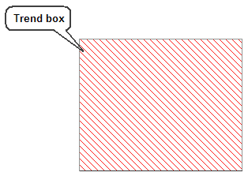

MultiPoint Trend dynamo

The MultiPoint Profile dynamo allows you to trend up to 15 different data points (for example, PV) on one chart. The points are connected on the chart with a trend line. This allows operators to scan the trend line and view how the data points compare to each other. Each data point can be a single parameter ’s current value, or can be a complete expression (where the result of the expression is the data point). The trend line can be either horizontal or vertical.
The MultiPoint Trend Dynamo is useful when there are several related values that together form a pattern, such as multiple temperature values on a column. The trend line shows the comparison of these measurements, so that the operator can graphically view the pattern and also notice differences in the pattern, without needing to read and mathematically compare the corresponding numerical values.
Once added to the operator graphic, you can resize the dynamo to better fit on the picture and the type of profile. In the column example above, you can make the width and height to fit in the column shape on your picture. Also, the data points do not need to be evenly spaced; instead, the space between them can be adjusted to match the process.